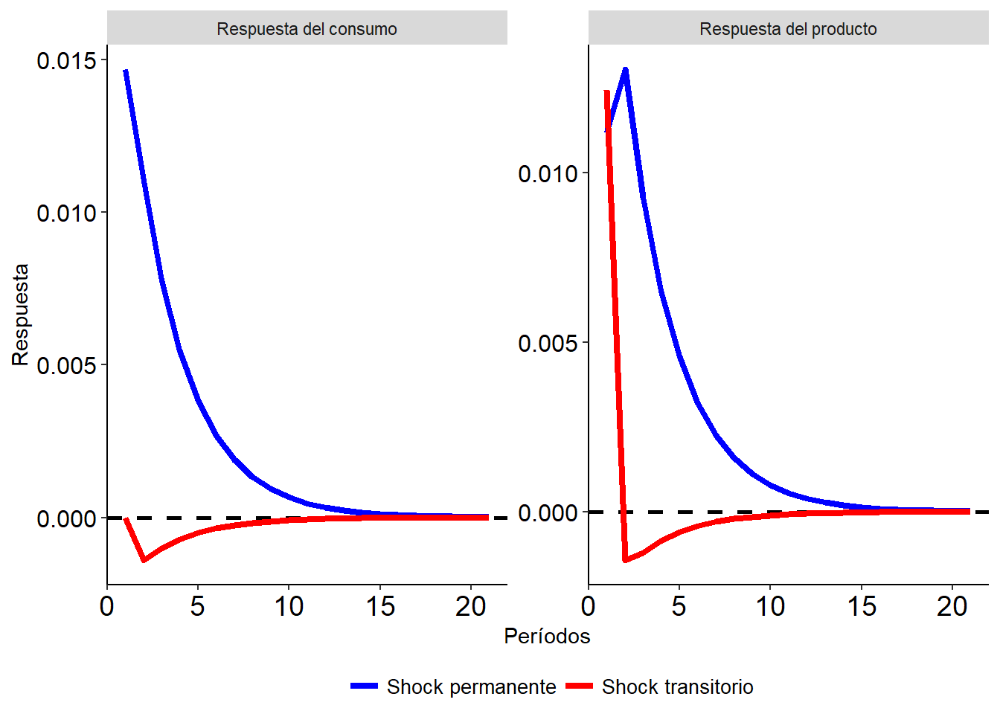

VECTORES AUTOREGRESIVOS (VAR)
2022-04-18
Capítulo 1 INTRODUCCIÓN
1.1 Proceso ARMA
Un proceso autoregresivo con media móvil (ARMA) es tipicamente continuo. Para disponer de un proceso ARMA es requerido un proceso ruido blanco
Un proceso ruido blanco es aquel que cumple con las sigueintes condiciones:
\[\begin{align} E(\epsilon_{t})&=0\\ Var(\epsilon_{t})&=\sigma^{2}\\ Cov(\epsilon_{t}, \epsilon_{t+j})&=0\;\; \forall j \end{align}\]
Dado ese proceso ruido blanco, un proceso ARMA(p,q) es:
\[\begin{align} x_{t}&= a+p_{1}x_{t-1}+p_{2}x_{t-2}+\cdots+p_{p}x_{t-p}+\epsilon_{t}+\theta_{1}\epsilon_{t-1}+\cdots+\theta_{q}\epsilon_{t-q}\\ x_{t}&= a+\sum_{j=1}^{p}p_{j}x_{t-j}+\epsilon_{t}+\sum_{j=1}^{q}\theta_{j}\epsilon_{t-j} \end{align}\]
Operador de rezago si definimo L tal que \(L(x_{t})=x_{t-1}\), es posible definir un polinomio de rezagos como:
\(a(L)=1L^{0}+a_{1}L^{1}+\cdots+a_{p}L^{p}\)
De manera que un proceso ARMA(p, q) pueda ser escrito como: \[\begin{equation} a(L)x_{t}=b(L)\epsilon_{t} \end{equation}\]
Lo estupendo de un proceso ARMA(p,q) es que no son únicos. Permiten invertir el componente AR del proceso como un MA y viceversa. Considere un ARMA(1,0):
\[\begin{align} x_{t}&=px_{t-1}+\epsilon_{t}\\ (1-pL)x_{t}&=\epsilon_{t}\\ x_{t}&=\frac{1}{(1-pL)}\epsilon_{t}\\ x_{t}&=\frac{1}{(1-pL)}\epsilon_{t}\frac{1+pL+p^{2}L^{2}+p^{3}L^{3}\cdots}{1+pL+p^{2}L^{2}+p^{3}L^{3}\cdots}\\ x_{t}&=(1+pL+p^{2}L^{2}+p^{3}L^{3}\cdots)\epsilon_{t}=b(L)\epsilon_{t}\\ x_{t}&=\sum_{j=0}^{\infty}p^{j}\epsilon_{t-j} \end{align}\]
De manera análoga podemos pasar de un proceso MA(1) a uno AR(\(\infty\)): \[\begin{align} x_{t}&=\epsilon_{t}+\theta\epsilon_{t-1}\\ x_{t}&=(1+\theta L)\epsilon_{t}\\ \frac{1}{(1+\theta L)}x_{t}&=\epsilon_{t}\\ \frac{1}{(1+\theta L)}x_{t}\frac{1-\theta L-\theta^{2}L^{2}-\theta^{3}L^{3}\cdots}{1-\theta L-\theta^{2}L^{2}-\theta^{3}L^{3}\cdots}&=\epsilon_{t}\\ (1-\theta L-\theta^{2}L^{2}-\theta^{3}L^{3}\cdots)x_{t}&=a(L)x_{t}=\epsilon_{t}\\ \sum_{j=0}^{\infty}-\theta^{j}x_{t}&=\epsilon_{t-j} \end{align}\]
Los anteriores resultados muestran que se puede estimar un proceso MA aproximándolo como un proceso AR. Un proceso AR puede ser estimado consistentemente a través de OLS.
1.2 Función Impulso Respuesta (IRF)
La IRF es el cambio entre el valor esperado de una variable aleatoria condicionado sobre la realizaciones de la incertidumbre en un punto en el tiempo entre el corriente con respecto al futuro. Formalmente:
\[\begin{equation} IRF=E_{t}x_{t+j}-E_{t-1}x_{t+j}\;\; \forall j\geq 0 \end{equation}\]
Si se tiene un proceso ARMA:
\[\begin{align} x_{t}&=b(L)\epsilon_{t}\\ E_{t}x_{t+1}&=E_{t}b(L)\epsilon_{t+1}=b(L)\epsilon_{t}\\ \end{align}\]
El anterior resultados es debido a que \(E_{t}x_{t+j}=0\;\;\forall j>0\) lo que significa, usando la misma lógica que que \(E_{t-1}x_{t+j}=0\;\;\forall j\geq 0\).
En conclusión la IFR es \(b(L)\epsilon_{t}\). La representación MA de un proceso es la IFR.
Capítulo 2 Vectores Autoregresivos (VAR)
Un VAR consiste en un conjunto de k variables endógenas \(Y_{t}=\{y_{1t},\cdots, y_{kt}\}\).
En el caso de un proceso ARMA(2,1): \(Y_t = \Phi_1Y_{t-1} + \Phi_2Y_{t-2} + u_t + \theta_1u_{t-1}\)
Podemos reescribirlo como: \[\begin{equation} \left( \begin{array}{c} Y_{t} \\ Y_{t-1} \\ u_{t} \end{array} \right)=\left( \begin{array}{ccc} \Phi_1 & \Phi_2 & \theta_1\\ 1 & 0 & 0\\ 0 & 0 & 0 \end{array} \right) \left( \begin{array}{c} Y_{t-1} \\ Y_{t-2} \\ u_{t-1} \end{array} \right)+\left( \begin{array}{c} 1\\ 0 \\ 1 \end{array} \right) \left( \begin{array}{c} u_{t} \\ 0 \\ 0 \end{array} \right) \nonumber \end{equation}\]
Lo anterior no es otra cosa que un proceso AR(1), matricialmente:
\(X_t = AX_{t−1} + Cw_t\)
Este proceso tiene los siguientes supuestos:
\(E(w_{t})=0\)
\(E(w_{t}w_{t}^{\tau})=\Sigma_{w}\) una matriz de covarianza invariante en el tiempo la cual es definida positiva.
2.1 Función Impulso Respuesta
La función impulso respuesta es la senda que sigue una serie cuando enfrenta un shock unitario.
Es interesante por:
- Caracteriza el comportamiento del modelo.
- Permite la discusión de quién causa a quién.
Para una proceso AR(1) \(x_{t}=p x_{t-1}+\epsilon_{t}\) el cual lo expresamos en MA(\(\infty\)) como \(x_{t}=\sum_{j=0}^{\infty}p^{j} \epsilon_{t-j}\), su impulso respuesta es:
\(\begin{array}{cccccccc} \epsilon_{t} &\colon &0&0&1&0&0&0 \\ x_{t} &\colon &0&0& p &p^{2}&p^{3}&\cdots \end{array}\)
¿Por qué es importante definir un proceso como un MA\((\infty)\)?
- La representación MA infinito de todo proceso es la función impulso respuesta
- La función impulso respuesta es equivalente a \(E_{t}(x_{t+j})-E_{t-1}(x_{t+j})\) que no es otra cosa que el error de pronóstico hacia j pasos adelante.
2.2 Vectores autoregresivos estructurales
Casi todas las variables en economía podrían considerarse hasta cierto punto endógenas. Sin embargo, prima un criterio de relevancia. Si bien es cierto que un comerciante al fijar el precio de una manzana está afectando la inflación, parece razonable suponer que la inflación es exógena al precio de las manzanas de este comerciante.
Por tanto si la inflación está dado por \(\pi\) y el precio de las manzanas por \(m\) tenemos el siguiente VAR
\[\begin{align} \alpha_{1,1}^{+}\pi_t+\alpha_{1,2}^{+}m_t &= \beta_{1,1}^{+}\pi_{t-1}+\beta_{1,2}^{+}m_{t-1}+e_{\pi,t}\\ \alpha_{2,1}^{+}\pi_t+\alpha_{2,2}^{+}m_t &= \beta_{2,1}^{+}\pi_{t-1}+\beta_{2,2}^{+}m_{t-1}+e_{m,t} \end{align}\]
Sí normalizamos el VAR tenemos lo siguiente: \[\begin{align} \pi_t+\alpha_{1,2}m_t &= \beta_{1,1}\pi_{t-1}+\beta_{1,2}m_{t-1}+e_{\pi,t}\\ \alpha_{2,1}\pi_t+m_t &= \beta_{2,1}\pi_{t-1}+\beta_{2,2}m_{t-1}+e_{m,t} \end{align}\]
Si resolvemos el sistema de ecuaciones simultáneas, despejamos las variables obtenemos un VAR en su forma reducida; comenzamos con la primera ecuación:
\[\begin{align} \pi_{t} &=\beta_{1,1}\pi_{t-1}+\beta_{1,2}m_{t-1}+e_{\pi,t}\\ &- \alpha_{1,2}(\beta_{2,1}\pi_{t-1}+\beta_{2,2}m_{t-1}-\alpha_{2,1}\pi_t+e_{m,t})\\ \pi_{t} &=\frac{(\beta_{1,1}-\alpha_{1,2}\beta_{2,1})}{(1+\alpha_{1,2}\alpha_{2,1})}\pi_{t-1}+ \frac{(\beta_{1,2}-\alpha_{1,2}\beta_{2,2})}{(1+\alpha_{1,2}\alpha_{2,1})}m_{t-1}+\frac{1}{(1+\alpha_{1,2}\alpha_{2,1})}e_{\pi,t}- \frac{\alpha_{1,2}}{(1+\alpha_{1,2}\alpha_{2,1})}e_{m,t}\\ \pi_{t}&=\gamma_{\pi}\pi_{t-1}+\gamma_{m}m_{t-1}+\gamma_{e_{\pi}}e_{\pi,t}+\gamma_{e_{m}}e_{m,t} \end{align}\]
De manera análoga para las manzanas: \[\begin{align} m_{t} &=\beta_{2,1}\pi_{t-1}+\beta_{2,2}m_{t-1}+e_{m,t}\\ &- \alpha_{2,1}(\beta_{1,1}\pi_{t-1}+\beta_{1,2}m_{t-1}-\alpha_{1,2}m_t+e_{\pi,t})\\ m_{t} &=\frac{(\beta_{2,1}-\alpha_{2,1}\beta_{1,1})}{(1+\alpha_{1,2}\alpha_{2,1})}\pi_{t-1}+ \frac{(\beta_{2,2}-\alpha_{2,1}\beta_{1,2})}{(1+\alpha_{1,2}\alpha_{2,1})}m_{t-1}+\frac{\alpha_{2,1}}{(1+\alpha_{1,2}\alpha_{2,1})}e_{\pi,t}- \frac{1}{(1+\alpha_{1,2}\alpha_{2,1})}e_{m,t}\\ m_{t}&=\omega_{\pi}\pi_{t-1}+\omega_{m}m_{t-1}+\omega_{e_{\pi}}e_{\pi,t}+\omega_{e_{m}}e_{m,t} \end{align}\]
Entonces ahora tenemos el siguiente sistema: \[\begin{align} \pi_{t}&=\gamma_{\pi}\pi_{t-1}+\gamma_{m}m_{t-1}+\gamma_{e_{\pi}}e_{\pi,t}+\gamma_{e_{m}}e_{m,t}\\ m_{t}&=\omega_{\pi}\pi_{t-1}+\omega_{m}m_{t-1}+\omega_{e_{\pi}}e_{\pi,t}+\omega_{e_{m}}e_{m,t} \end{align}\]
El sistema anterior puede escribirse de forma matricial como: \[\begin{equation} \left( \begin{array}{c} \pi_{t} \\ m_{t} \end{array}\right)=\left( \begin{array}{cc} \gamma_{\pi} & \gamma_{m}\\ \omega_{\pi} & \omega_{m} \end{array} \right) \left( \begin{array}{c} \pi_{t-1}\\ m_{t-1} \end{array} \right) + \left( \begin{array}{cc} \gamma_{e_{\pi}} & \gamma_{e_{m}}\\ \omega_{e_{\pi}} & \omega_{e_{m}} \end{array} \right) \left( \begin{array}{c} e_{\pi,t}\\ e_{m,t} \end{array} \right) \end{equation}\]
Noten que para que sea un sistema estructural, es decir haya un fundamento económico que defina el orden de prelación de la variable exógena \(\pi\) hacia la endógena \(m\), \(\alpha_{1,2}\) debe ser igual a cero. Por lo que el sistema podría ser escrito como:
\[\begin{equation} \left( \begin{array}{c} \pi_{t} \\ m_{t} \end{array}\right)=\left( \begin{array}{cc} \beta_{1,1} & \beta_{1,2}\\ \omega_{\pi} & \omega_{m} \end{array} \right) \left( \begin{array}{c} \pi_{t-1}\\ m_{t-1} \end{array} \right) + \left( \begin{array}{cc} \gamma_{e_{\pi}} & 0\\ \omega_{e_{\pi}} & 1 \end{array} \right) \left( \begin{array}{c} e_{\pi,t}\\ e_{m,t} \end{array} \right) \end{equation}\]
Expresándolo de forma matricial tenermos:
\[\begin{equation} \label{e1} x_t = \Gamma x_{t−1} + Bw_t \end{equation}\]
Reordenando:
\[\begin{align} x_{t}-\Gamma x_{t−1} &= Bw_t\\ A(L)x_{t}&= Bw_t \end{align}\]
Donde \(A(L)=I-AL\) con A:
\[\begin{equation} A=\left( \begin{array}{cc} \beta_{1,1} & \beta_{1,2}\\ \omega_{\pi} & \omega_{m} \end{array} \right) \end{equation}\]
El sistema puede ser estimado de manera consistente y eficiente a través de OLS. La razón de la consistencia es que todos los regresores datan de t-1 (particularmente en este caso y en el caso general de t-1 hacia más atrás) mientras los errores datan en t. El término del error suele conocerse como imnovación. En tanto la estimación OLS es eficiente porque los regresores son los mismos en ambas ecuaciones (por lo que en este caso el método de estimación OLS coincide con el método Seemingly unrelated regressions (SUR)).
En otros casos, por ejemplo, el caso entre el precio de las acciones (x) y el consumo (z), sus innovaciones \((e_{x,t}\;e_{z,t})\) están correlacionadas. En esa situación no existe una posible interpretación estructural de esas innovaciones. Pues éstas son afectadas por un factor profundo. Sin embargo, para efectos de pronóstico un VAR con esas variables no tiene importancia el desconocimiento de ese factor profundo. No obstante, para propósito de análisis económmico sí la tiene. Un VAR como el representado por las variables x y z es conocido como de forma reducida pues no es posible dar una interpretación estructural a sus innovaciones.
El análisis de un VAR estructural (SVAR) presupone que las innovaciones representadas en el VAR \((e_{x,t}\;e_{z,t})\) son conducidas por un factor profundo ello es un shock estructural. De manera que existe una vinculación líneal entre ese shock estructural \((\epsilon_{t}=[\epsilon_{x,t}\;\;\;\epsilon_{z,t}])\) con las innovaciones de la forma reducida \((e_{t}=[e_{x,t}\;\;\;e_{z,t}])\):
\[\begin{equation} e_{t}=B\epsilon_{t} \end{equation}\]
Sí \(\Sigma_e=E(ee^{\tau})\) es la matriz de varianza y covarianza de la forma reducida, manipulando la ecuación anterior se tiene:
\[\begin{equation} E(ee^{\tau})=BE(\epsilon\epsilon^{\tau})B^{\tau} \end{equation}\]
Como ellas no están correlacionadas los elementos fuera de la diagonal de \(\Sigma_\epsilon=E(\epsilon\epsilon^{\tau})\) son cero, y si normalizamos cada uno de los shocks estructurales haciendo que sean igual a la unidad, se tendrían que \(\Sigma_\epsilon=E(\epsilon\epsilon^{\tau})=I\). Por tanto la ecuación anterior se expresa como:
\[\begin{equation} E(ee^{\tau})=BB^{\tau} \end{equation}\]
Lo anterior nos lleva a un sistema de ecuaciones que sin algún supuesto estaría indeterminado. Pues para el caso de dos variables existen 4 elementos únicos en la matriz B y 4 elmentos únicos en la matriz \(BB^{\tau}\). Pero en la matriz \(\Sigma_e\) solo existen tres elementos únicos, pues una matriz de varianza y covarianza es simétrica. En conclusión sin imponer un supuesto sobre la matriz B no es posible la identificación.
En el caso general de un VAR con n variables, existen n innovaciones, la matriz de varianza y covarianza de esas n innovaciones tendrían \(n^{2}\) elementos, pero de los cuales solo \(\frac{n^{2}+n}{2}\) serían únicos. Dado que \(BB^{\tau}\) tendría \(n^{2}\) elementos se requiere que tenga \(\frac{n^{2}+n}{2}\) elementos únicos para que el sistema sea identificado, lo que significa imponer \(\frac{n(n-1)}{2}\) restricciones. En el caso de n=2 implica imponer sobre B una sola restricción.
Las restricciones que se impongan deben provenir de la teoría económica. Las restricciones que más suelen utilizarse son las del tipo recursivas, ello son las que hacen un supuesto sobre la temporalidad en que algunos shocks solo afectan a ciertas variables con un rezago. Lo anterior implica que algunos elementos en la matriz B son ceros. En el último ejemplo suponga que \(\epsilon_{z,t}\) no afectan \(x_{t}\) haciendo que el elmento (1,2) en la matriz B sea cero. Con esa restricción los tres elementos restantes de la matriz B pueden ser identificados desde la matriz de varianza y covarianza de los errores en su forma reducida.
¿Son las restricciones del tipo recursiva ciertas en la realidad? Aveces. En la literatura de política monetaria es común pensar que los shocks de esa políticas afectan a la economía con rezago. Supongamos un VAR entre la tasa del fed fund y la tasa de crecimiento real del PIB de USA, \(Y_{t}=[i_{t}\;\; \Delta y_{t}]\). Se podría interpretar como que \(\epsilon_{i,t}\) es un shock de política monetaria, mientras \(\epsilon_{\Delta y,t}\) es un shock de oferta. Bajo estos supuestos la posición (2, 1) en la matriz B es cero.
Una vez identificado un SVAR, lo que interesa es conocer la función impulso respuesta y la descomposición de la varianza, esto significa que lo que interesa es la dinámica de las variables ante un shock. Como se dijo anteriormente la IFR es la representación MA de un proceso ARMA:
\[\begin{equation} A(L)Y_{t}=B\epsilon_{t} \end{equation}\]
Si se invierte el proceso AR y definimos \(C(L)=A(L)^{-1}B\) ésta sería la matriz de polinomios con los coeficientes de media móviles estructurales. Es importante notar que la matriz B es la que gobierna los impulsos-respuestas por esa razón se conoce como la matriz de impacto.
\[\begin{equation} Y_{t}=A(L)^{-1}B\epsilon_{t}=C(L)\epsilon_{t} \end{equation}\]
Para encontrar la IRF definimos \(C_{i,j}(h)\) la respuesta de la variable i ante un shock en la variable j en el horizonte h.
El error de pronóstico de una variable en el período t es el cambio en la variable que no pudo ser pronósticado entre el período t-1 y t. Ello se debe a la realización de los shocks estructurales en un sistema (\(\epsilon_{t}\)). Es posible computar el error de pronóstico para muchos horizontes h. El error de pronóstico en h=0 para cada variable en nuestro sistema es:
\[\begin{align} E_{t}\Delta y_{t}-E_{t-1}\Delta y_{t}&=C_{1,1}(0)\epsilon_{\Delta y, t}+C_{1,2}(0)\epsilon_{i, t}\\ E_{t}i_{t}-E_{t-1}i_{t}&=C_{2,1}(0)\epsilon_{\Delta y, t}+C_{2,2}(0)\epsilon_{i, t} \end{align}\]
La varianza del error de pronóstico es su cuadrado. Si se define \(\Omega_{i}(h)\) como la varianza del error de pronóstico de la variable i en el horizonte h. Entonces su calculo en h=0 es simple:
\[\begin{align} \Omega_{\Delta y}(0)&=C_{1,1}(0)^{2}+C_{1,2}(0)^{2}\\ \Omega_{i}(0) &=C_{2,1}(0)^{2}+C_{2,2}(0)^{2} \end{align}\]
Lo anterior sigute el supuesto que el shock tiene varianza unitaria y no están correlacionadas. El error de pronósticos para estas variables en el horizonte h=1 es:
\[\begin{align} E_{t}\Delta y_{t+1}-E_{t-1}\Delta y_{t+1}&=C_{1,1}(0)\epsilon_{\Delta y, t+1}+C_{1,2}(0)\epsilon_{i, t+1}+C_{1,1}(1)\epsilon_{\Delta y, t}+C_{1,2}(1)\epsilon_{i, t}\\ E_{t}i_{t+1}-E_{t-1}i_{t+1}&=C_{2,1}(0)\epsilon_{\Delta y, t+1}+C_{2,2}(0)\epsilon_{i, t+1}+C_{2,1}(1)\epsilon_{\Delta y, t}+C_{2,2}(1)\epsilon_{i, t} \end{align}\]
Y la varianza del error de pronóstico sería:
\[\begin{align} \Omega_{\Delta y}(1)&=C_{1,1}(0)^{2}+C_{1,2}(0)^{2}+C_{1,1}(1)^{2}+C_{1,2}(1)^{2}\\ \Omega_{i}(1) &=C_{2,1}(0)^{2}+C_{2,2}(0)^{2}+C_{2,1}(1)^{2}+C_{2,2}(1)^{2} \end{align}\]
Es posible definir la varianza del error de pronóstico de manera recursiva para disponerse por más períodos:
\[\begin{align} \Omega_{\Delta y}(0)&=C_{1,1}(0)^{2}+C_{1,2}(0)^{2}\\ \Omega_{\Delta y}(1)&=C_{1,1}(1)^{2}+C_{1,2}(1)^{2}+\Omega_{\Delta y}(0)\\ \vdots & \vdots\\ \Omega_{\Delta y}(h)&=C_{1,1}(h)^{2}+C_{1,2}(h)^{2}+\Omega_{\Delta y}(h-1) \end{align}\]
De manera más general para un VAR de n variables, la varianza total del error de pronóstico de la variable i está dado por:
\[\begin{equation} \Omega_{i}(h)=\sum_{k=0}^{h} \sum_{j=1}^{n}C_{i,j}(k)^{2} \end{equation}\]
La descomposición de la varianza del error de pronóstico, es la manera de cuantificar que tan importante es cada shock en explicar la varianción que experimenta cada una de las variables en un sistema VAR. Esto es igual a la fracción de la varianza del error de pronósitico de cada variable dado cada uno de los shock en cada uno de los horizontes. Específicamemte, si definimos \(\omega_{i,j}(h)\) como la varianza en el error de pronóstico de la variable i ante un shock en la variable j en el horizonte h, se tiene:
\[\begin{equation} \omega_{i, j}(h)=\sum_{k=0}^{h} C_{i,j}(k)^{2} \end{equation}\]
La fracción de la varianza del error de pronóstico de la variable i dado por el shock en la variable j en el horizonte h denotado por \(\phi_{i,j}(h)\) es lo de arriba dividido por la varianza total del error de pronóstico:
\[\begin{equation} \phi_{i,j}(h)=\frac{\omega_{i, j}(h)}{\Omega_{i}(h)}=\frac{\sum_{k=0}^{h} C_{i,j}(k)^{2}}{\sum_{k=0}^{h} \sum_{j=1}^{n}C_{i,j}(k)^{2}} \end{equation}\]
2.3 Aplicación Cochrane (1994)
Cochrane (1994) estima un VAR de dos variables, el gasto real de consumo en bienes no durables más servicios (\(c_{t}\)) y el PIB real (y_{t}). Introduciendo 2 rezago el VAR se expesa como:
\[\begin{align} c_{t}&= a_{c}+\beta_{1,1}^{c}c_{t-1}+\beta_{1,2}^{c}y_{t-1}+\beta_{2,1}^{c}c_{t-2}+\beta_{2,2}^{c}y_{t-2}+e_{c,t}\\ y_{t}&= a_{y}+\beta_{1,1}^{y}c_{t-1}+\beta_{1,2}^{y}y_{t-1}+\beta_{2,1}^{y}c_{t-2}+\beta_{2,2}^{y}y_{t-2}+e_{y,t} \end{align}\]
Utilizando datos trimestrales desde 1947Q1 hasta 2010Q3. Obtenemos la siguiente estimación:
library(quantmod)
library(dplyr)
library(stats)
library(stargazer)
getSymbols(c("PCENDC96", "PCESC96", "GDPC1"),
src = "FRED")## [1] "PCENDC96" "PCESC96" "GDPC1"C<-PCENDC96+PCESC96
ep_c <-endpoints(C, on = "quarters")
C <-period.apply(C , INDEX = ep_c, FUN = last)
C <-diff(log(C), lag=4)
#C <-log(C)
GDPC1 <-diff(log(GDPC1), lag=4)
#GDPC1 <-log(GDPC1)
GDPC1 <-merge(GDPC1, index(C), join="outer")
GDPC1 <-cbind(na.locf(GDPC1, fromLast = FALSE))
BASE <-merge(C, GDPC1, join="left")
BASE <-data.frame(date=index(BASE), coredata(BASE))
colnames(BASE)<-c("date","C", "Y")
DATA <-dplyr::select(BASE, date, C, Y)
colnames(DATA)<-c("date", "c", "y")
DATA <-filter(DATA, date >= "2003-03-01")
DATA <- xts(DATA[,-1], order.by=as.Date(DATA[,1], "%Y/%m/%d"))
library("svars")
VAR_1 <- vars::VAR(DATA, p = 1, type = 'const')
VAR_1$varresult$y$coefficients## c.l1 y.l1 const
## 1.031021984 -0.139087357 0.004025386VAR_1$varresult$c$coefficients## c.l1 y.l1 const
## 0.846092193 -0.115153170 0.005142927SIGMA<-summary(VAR_1)
SIGMA$covres## c y
## c 0.0002165772 0.0001608193
## y 0.0001608193 0.0002722802De acuerdo con la hipótesis del ingreso permanente, el consumo debe ser igual al ingreso permanente, en tanto el ingreso transitorio igual a la diferencia entre el ingreso actual y el permanente. Cochcrane desea identificar los shocks del ingreso permanente \(\epsilon_{1,t}\) y del ingreso transitorio \(\epsilon_{2,t}\). La intuición nos dice que el consumo no debería de responder a los shocks de ingresos transitorios. Lo anterior implica que \(B_{1,2}=0\).
B <- matrix(rep(NA, 4), ncol = 2)
B[1, 2] <- 0
SVAR_1 <- SVAR(VAR_1, estmethod="direct", Bmat = B)
SVAR_1$B ## c y
## c 0.01471658 0.00000000
## y 0.01092775 0.01236545Dado la estimación de la matriz B, es posible calcular la matriz C(L) y computar la función impulso respuesta de cada shock.
FIR_1 <- irf(SVAR_1,n.ahead = 20, impulse = c("c","y"), boot =FALSE)
RESULTADO<-as.data.frame(FIR_1$irf$c)
PERIODO<-seq(1,21,1)
RESULTADO <-cbind(RESULTADO,PERIODO)
CODE<-rep("consumo",21)
RESULTADO <-cbind(RESULTADO,CODE)
#####################################
RESULTADO2<-as.data.frame(FIR_1$irf$y)
RESULTADO2 <-cbind(RESULTADO2,PERIODO)
CODE<-rep("producto",21)
RESULTADO2 <-cbind(RESULTADO2,CODE)
RESULTADO <-rbind(RESULTADO,RESULTADO2)
####HACER MI PROPIO GRÁFICO###################
library(tidyr)
BASE_LONG <- gather(RESULTADO, key="measure", value="value",
c("c", "y"))
BASE_LONG$measure <- factor(BASE_LONG$measure,
levels = c("c","y"))
variable_names <- list(
"c" = "Respuesta del consumo",
"y" = "Respuesta del producto"
)
variable_labeller2 <- function(variable,value){
if (variable=='measure') {
return(variable_names[value])
} else {
return(region_names)
}
}
paleta<-c("blue", "red")
library(ggplot2)
Z<-ggplot(BASE_LONG, aes(x=PERIODO, y=value, group = CODE,
colour=CODE))+
facet_wrap(.~measure, scales="free", labeller= variable_labeller2)
Z<-Z+labs(y="Respuesta",
x="Períodos")+
geom_hline(yintercept=0, linetype="dashed",
color = "black", size=1)+
geom_line(size=1.5)+
scale_color_manual(values=paleta,
labels = c("Shock permanente",
"Shock transitorio"))
Z<-Z+theme(axis.line.x = element_line(colour = "black", size = 0.5),
axis.line.y.left = element_line(colour = "black", size = 0.5),
axis.line.y.right = element_blank(),
axis.text.x = element_text( color = "black", size = 14),
axis.text.y = element_text( color = "black", size = 12),
panel.grid.minor = element_blank(),
panel.grid.major.y = element_blank(),
panel.grid.major.x = element_blank(),
panel.border = element_blank(),
panel.background = element_blank(),
legend.key=element_rect(fill = "white", colour = "white",
color = "white", inherit.blank = FALSE),
legend.title = element_blank(),
legend.text = element_text(size=10),
legend.position="bottom",
legend.spacing.x = unit(0.10, 'cm'),
legend.margin=margin(),
legend.background = element_rect(fill = "white", colour = "transparent",
color = "white", inherit.blank = FALSE)
)+guides(color = guide_legend(nrow = 1))
Z
El impulso respuesta mostrado en la figura anterior es consistente con la teoría, pues se observa como el consumo se mueve poco ante un shock transitorio. La descomposición de la varianza por su parte revela:
RESULTADO<-as.data.frame(fevd(VAR_1, n.ahead = 20)$c)
PERIODO<-seq(1,20,1)
RESULTADO <-cbind(RESULTADO,PERIODO)
CODE<-rep("permanente",20)
RESULTADO <-cbind(RESULTADO,CODE)
#####################################
RESULTADO2<-as.data.frame(fevd(VAR_1, n.ahead = 20)$y)
RESULTADO2 <-cbind(RESULTADO2,PERIODO)
CODE<-rep("transitorio",20)
RESULTADO2 <-cbind(RESULTADO2,CODE)
RESULTADO <-rbind(RESULTADO,RESULTADO2)
BASE_LONG <- gather(RESULTADO, key="measure", value="value",
c("c","y"))
BASE_LONG$CODE <- factor(BASE_LONG$CODE,
levels = c("permanente","transitorio"))
variable_names <- list(
"permanente" = "Varianza del consumo",
"transitorio" = "Varianza del producto"
)
variable_labeller2 <- function(variable,value){
if (variable=='CODE') {
return(variable_names[value])
} else {
return(region_names)
}
}
paleta<-c("blue", "red")
Z<-ggplot(BASE_LONG, aes(x=PERIODO, y=value, group = measure,
fill=measure))+
facet_wrap(.~CODE, scales="free", labeller= variable_labeller2)
Z<-Z+labs(y="Porcentaje",
x="Períodos")+
geom_bar(stat='identity')+
scale_fill_manual(values=paleta,
labels = c("Shock permanente",
"Shock transitorio"))
Z<-Z+theme(axis.line.x = element_line(colour = "black", size = 0.5),
axis.line.y.left = element_line(colour = "black", size = 0.5),
axis.line.y.right = element_blank(),
axis.text.x = element_text( color = "black", size = 14),
axis.text.y = element_text( color = "black", size = 12),
panel.grid.minor = element_blank(),
panel.grid.major.y = element_blank(),
panel.grid.major.x = element_blank(),
panel.border = element_blank(),
panel.background = element_blank(),
legend.key=element_rect(fill = "white", colour = "white",
color = "white", inherit.blank = FALSE),
legend.title = element_blank(),
legend.text = element_text(size=10),
legend.position="bottom",
legend.spacing.x = unit(0.10, 'cm'),
legend.margin=margin(),
legend.background = element_rect(fill = "white", colour = "transparent",
color = "white", inherit.blank = FALSE)
)+guides(color = guide_legend(nrow = 1))
ZEl gráfico anterior también confirma la teoría básica. El consumo es completamente explicado por los shocks permanentes. Una significativa fracción de los movimientos en el producto en el corto plazo obedecen a shocks transitorios, en horizontes largo los shocks permanentes se hacen más relevantes.
2.4 Ortogonalización de Sims
Es de notar que los datos, por sí solos, no nos pueden ayudar ya que tanto el proceso \(x_{t}=C(L)\epsilon_{t}\) como el proceso \(x_{t}=A(L)^{-1}e_{t}\) son equivalentes y producen las mismas series.
Así que somos nosotros quienes decidimos cual combinación lineal es más interesante, en base a un conjunto de supuestos llamados supuestos de ortogonalización.
Recordemos que existe una vinculación líneal entre el shock estructural \((\epsilon_{t}=[\epsilon_{x,t}\;\;\;\epsilon_{z,t}])\) con las innovaciones de la forma reducida \((e_{t}=[e_{x,t}\;\;\;e_{z,t}])\):
\[\begin{equation} e_{t}=B\epsilon_{t} \end{equation}\]
Sí \(\Sigma_e=E(e e^{\tau})\) es la matriz de varianza y covarianza de la forma reducida, y \(\Sigma_\epsilon=E(\epsilon \epsilon^{\tau})=I\) es la matriz identidad se tiene:
\[\begin{align} \Sigma_e&=BB^{\tau}\\ B^{-1}\Sigma_eB^{-1\tau}&=I\\ Q\Sigma_eQ^{\tau}&=I \end{align}\]
Una forma de construir la matriz Q es a través de la descomposición de Cholesky
Desafortunadamente existen muchas matrices Q que pueden hacer cumplir la identidad \(Q\Sigma_eQ^{\tau}=I\), entonces la pregunta es: ¿cuál de esas matrices Q hay que escoger?: La respuesta dependerá de las propiedades que impongamos del proceso MA ó C(L), en concreto se utilizará la teoría económica para especificar C(0) y C(1).
Sims (1980b) sugiere que se específique las propiedades de C(0), enfatizando el hecho de que \(A(0)=I\). En especifico sugiere escoger una matriz triangular inferior C(0) tal que:
\[\begin{equation} \left( \begin{array}{c} \pi_{t} \\ m_{t} \end{array}\right)=\left( \begin{array}{cc} C_{0\pi \pi} & 0\\ C_{0m \pi} & C_{0mm} \end{array} \right) \left( \begin{array}{c} \epsilon_{1t}\\ \epsilon_{2t} \end{array} \right) +C_{1}\epsilon_{t-1}+\cdots \end{equation}\]
La matriz triangular inferior C(0) implica que \(\pi_{t}\) aparece en la ecuación de \(m_{t}\), pero \(m_{t}\) no en la ecuación de \(\pi_{t}\). Para observar lo anterior podemos representar el sistema dado por la ecuación anterior como un proceso autorregresivo y ortogonalizado: \(D(L)x_{t}=\epsilon_{t}\), donde \(D(L)=C(L)^{-1}\); recordando que la inversa de una matriz triangular inferior es también una matriz triangular inferior, tenemos:
\[\begin{equation} \left( \begin{array}{cc} D_{0\pi m} & 0\\ D_{0m \pi} & D_{0mm} \end{array} \right) \left( \begin{array}{c} \pi_{t} \\ m_{t} \end{array}\right)+D_{1}x_{t-1}+\cdots=\epsilon_{t}\nonumber \end{equation}\]
Es de notar que la sugerencia de Sims es equivalente a estimar un sistema \((\pi_{t}, m_{t})\) por OLS, en que la ecuación de \(m_{t}\) tenga como regresor \(\pi_{t}\), pero no viceversa y escalando cada ecuación para que la varianza del error sea 1.
\[\begin{align} \pi_{t}&=\;\;\;\;\;\;\;\;\;\;\;\;\;\;\alpha_{1\pi \pi}\pi_{t-1}+\cdots+\alpha_{1\pi m}m_{t-1}+\cdots+\epsilon_{1t}\nonumber \\ m_{t}&=\alpha_{0m \pi}\pi_{t}+\alpha_{1m \pi}\pi_{t-1}+\cdots+\alpha_{1mm}m_{t-1}+\cdots +\epsilon_{2t}\nonumber \end{align}\]
En resumen se puede unicamente especificar la matriz B como una combinación lineal de los shocks originales \((\epsilon_{t})\) y elaborar los impulsos respuesta de acuerdo a:
- El error \((\epsilon_{t})\) son ortogonales.
- Que la respuesta instantánea de una variable a un shock es cero, siendo este al caso de estimar un VAR por OLS con efecto contemporaneo de \(\pi\) sobre m y no viceversa.
Es de notar que si se específica C(0) se garantiza que al aplicar la descomposición de Choleski se produce una única matriz triangular inferior B: \[\begin{align} C(0)&=A(0)^{-1}B=IB=B \nonumber\\ \end{align}\]
Entonces lo importante es decidir el orden de prelación De lo exógeno a lo endógeno de las variables en el VAR; auxiliándose de la teoría económica.
2.5 Blanchard-Quah ortogonalización (restricciones) sobre C(1)
Blanchard and Quah (1988) definen un modelo partiendo del mismo supuesto en que \(e_{t}=B\epsilon_{t}\) por lo que se tiene:
\[\begin{align} A(L)(1-\phi)x_{t}&=e_{t}\\ A(0)(1-\phi)x_{t}&=B\epsilon_{t}\\ A(L)x_{t}&=(1-\phi)^{-1}B\epsilon_{t}\\ \end{align}\]
Donde \(C(1)=(1-\phi)^{-1}B=A(1)B\) por los que se tiene:
\[\begin{align} (1-\phi)\Sigma_{e}(1-\phi)&=BB^{\tau}\\ Q(1-\phi)\Sigma_e(1-\phi)Q^{\tau}&=I\\ \end{align}\]
De manera que C(1) permite obtener la respuesta del nivel \(x_{t}\) ante un shock.
2.6 Aplicación Blanchard and Quah (1988)
Blanchard and Quah (1988) argumentan que los shocks de demanda no tienen efectos en el largo plazo sobre el producto nominal. Para ello se requiere que C(1) sea una matriz triangular inferior en un VAR donde el producto nominal sea la variable exógena.
getSymbols(c("GDP", "UNRATE"),
src = "FRED")## [1] "GDP" "UNRATE"ep_U <-endpoints(UNRATE, on = "quarters")
U <-period.apply(UNRATE, INDEX = ep_U, FUN = last)
#U <-U[-1]
U <-U-mean(U,na.rm=TRUE)
Y <-diff(100*log(GDP), lag=1)
#Y <-Y-mean(Y,na.rm=TRUE)
Y <-merge(Y, index(U), join="outer")
Y <-cbind(na.locf(Y, fromLast = FALSE))
BASE <-merge(U, Y, join="left")
BASE <-data.frame(date=index(BASE), coredata(BASE))
colnames(BASE)<-c("date","U", "Y")
DATA <-dplyr::select(BASE, date, Y, U)
colnames(DATA)<-c("date", "y", "u")
DATA <-filter(DATA, date >= "1951-06-01")
DATA <- xts(DATA[,-1], order.by=as.Date(DATA[,1], "%Y/%m/%d"))
library("svars")
VAR_2 <- vars::VAR(DATA, p = 4, type = 'none')
VAR_2$varresult$y$coefficients## y.l1 u.l1 y.l2 u.l2 y.l3 u.l3
## 0.35103276 0.64950669 0.37665552 -0.12295317 0.19998463 -0.13713731
## y.l4 u.l4
## 0.01638701 -0.25960029VAR_2$varresult$u$coefficients## y.l1 u.l1 y.l2 u.l2 y.l3 u.l3
## -0.11043586 0.87198140 0.01998763 0.20230286 0.07495755 -0.01065473
## y.l4 u.l4
## 0.02375368 -0.14644337SIGMA<-summary(VAR_2)
SIGMA$covres## y u
## y 1.4549864 -0.5366558
## u -0.5366558 0.3338122Habiendo estimado el VAR a continuación encontramos las restricciones de corto y largo plazo:
BQMODEL<- BQ(VAR_2 )
summary(BQMODEL)##
## SVAR Estimation Results:
## ========================
##
## Call:
## BQ(x = VAR_2)
##
## Type: Blanchard-Quah
## Sample size: 280
## Log Likelihood: -568.972
##
## Estimated contemporaneous impact matrix:
## y u
## y 0.80140 -0.9053
## u -0.01779 0.5775
##
## Estimated identified long run impact matrix:
## y u
## y 17.994 0.000
## u 1.581 6.974
##
## Covariance matrix of reduced form residuals (*100):
## y u
## y 146.18 -53.71
## u -53.71 33.38En seguida calculamos la función impulso respuesta para cada variable
FIR_BQ <- irf(BQMODEL,n.ahead = 40, impulse = c("y","u"), boot =FALSE)
supply <- cbind(cumsum(FIR_BQ$irf$y[, 1]), FIR_BQ$irf$y[, 2])
#RESULTADO<-as.data.frame(supply)
RESULTADO<-as.data.frame(FIR_BQ$irf$y)
PERIODO<-seq(1,41,1)
RESULTADO <-cbind(RESULTADO,PERIODO)
CODE<-rep("Tecnológico",41)
RESULTADO <-cbind(RESULTADO,CODE)
#####################################
demand <- cbind(-1*cumsum(FIR_BQ$irf$u[, 1]), -1*FIR_BQ$irf$u[, 2])
#RESULTADO2 <-as.data.frame(demand)
RESULTADO2<-as.data.frame(FIR_BQ$irf$u*-1)
RESULTADO2 <-cbind(RESULTADO2,PERIODO)
CODE<-rep("Demanda",41)
RESULTADO2 <-cbind(RESULTADO2,CODE)
RESULTADO <-rbind(RESULTADO,RESULTADO2)
BASE_LONG <- gather(RESULTADO, key="measure", value="value",c("y", "u"))
BASE_LONG$measure <- factor(BASE_LONG$measure, levels = c("y", "u"))
#BASE_LONG <- gather(RESULTADO, key="measure", value="value",c("V1", "V2"))
#BASE_LONG$measure <- factor(BASE_LONG$measure, levels = c("V1", "V2"))
BASE_LONG$CODE <- factor(BASE_LONG$CODE,
levels = c("Tecnológico", "Demanda"))
variable_names <- list(
"y" = "Respuesta del producto",
"u" = "Respuesta del desempleo"
)
#variable_names <- list(
#"V1" = "Respuesta del producto",
#"V2" = "Respuesta del desempleo"
#)
variable_labeller2 <- function(variable,value){
if (variable=='measure') {
return(variable_names[value])
} else {
return(region_names)
}
}
paleta<-c("blue", "red")
Z<-ggplot(BASE_LONG, aes(x=PERIODO, y=value, group = CODE,
colour=CODE))+
facet_wrap(.~measure, scales="free", labeller= variable_labeller2)
Z<-Z+labs(y="Respuesta",
x="Períodos")+
geom_hline(yintercept=0, linetype="dashed",
color = "black", size=1)+
geom_line(size=1.5)+
scale_color_manual(values=paleta,
labels = c("Shock de oferta",
"Shock de demanda"))
Z<-Z+theme(axis.line.x = element_line(colour = "black", size = 0.5),
axis.line.y.left = element_line(colour = "black", size = 0.5),
axis.line.y.right = element_blank(),
axis.text.x = element_text( color = "black", size = 14),
axis.text.y = element_text( color = "black", size = 12),
panel.grid.minor = element_blank(),
panel.grid.major.y = element_blank(),
panel.grid.major.x = element_blank(),
panel.border = element_blank(),
panel.background = element_blank(),
legend.key=element_rect(fill = "white", colour = "white",
color = "white", inherit.blank = FALSE),
legend.title = element_blank(),
legend.text = element_text(size=10),
legend.position="bottom",
legend.spacing.x = unit(0.10, 'cm'),
legend.margin=margin(),
legend.background = element_rect(fill = "white", colour = "transparent",
color = "white", inherit.blank = FALSE)
)+guides(color = guide_legend(nrow = 1))
ZCapítulo 3 Paquetes en R
3.1 Paquete SVARS
En esta nota para la obtención de un Vector Autorregresivo Estructural (SVAR) se utilizará el paquete en R SVARS elaborado por Lange et al. (2021). A continuación se muestra la carga de este paquete junto a otros que serán de utilidad cuando se analicen los resultados.
#install.packages("svars")
library("svars")
library("ggplot2")Enseguida se cargará una base de datos en frecuencia trimestral que contiene la brecha producto (x), la inflación de trimestre a trimestre del deflactor del PIB (\(\pi\)) y una tasa de interés nominal del fondo federal (i).
data("USA")
usa<-as.zoo(USA)A continuación se aplicará el método de ortogonalización de Sims (1980a) el cual consiste en asumir que la matriz \(C(0)\) es una matriz triangular inferior.
C <- matrix(rep(NA, 9), ncol = 3)
C[1, c(2, 3)] <- 0
C[2, 3] <- 0
C## [,1] [,2] [,3]
## [1,] NA 0 0
## [2,] NA NA 0
## [3,] NA NA NALuego estimamos el SVAR con esa restricción
plain.var <- vars::VAR(USA, p = 6, type = 'const')
Sims_mdl <- SVAR(plain.var, estmethod="direct", Bmat = C)
summary(Sims_mdl)##
## SVAR Estimation Results:
## ========================
##
## Call:
## SVAR(x = plain.var, estmethod = "direct", Bmat = C)
##
## Type: B-model
## Sample size: 169
## Log Likelihood: -722.095
## Method: direct
## Number of iterations: 501
## Convergence code: 1
##
## Estimated A matrix:
## x pi i
## x 1 0 0
## pi 0 1 0
## i 0 0 1
##
## Estimated B matrix:
## x pi i
## x 1.0339 0.0000 0.000
## pi -0.8068 1.0500 0.000
## i -1.0568 0.3056 0.936
##
## Covariance matrix of reduced form residuals (*100):
## x pi i
## x 106.90 -83.42 -109.3
## pi -83.42 175.33 117.3
## i -109.26 117.34 208.6Y representamos la función impulso respuesta ante un shock en \(\pi\).
Sims.irf <- irf(Sims_mdl, impulse = "pi", response = NULL,
n.ahead = 48, boot = TRUE)
RESULTADO<-as.data.frame(Sims.irf$irf$pi)
PERIODO<-seq(1,49,1)
RESULTADO <-cbind(RESULTADO,PERIODO)
####HACER MI PROPIO GRÁFICO###################
library(tidyr)
library(dplyr)
library(ggthemes)
Data_LONG <- gather(RESULTADO, key="code", value="YY",
c("x", "pi", "i"))
paleta_code_bar<- c("#C00000", "#E26B0A", "#92D050")
P<- ggplot(data = Data_LONG, aes(x = PERIODO, y =YY , group = code,
colour=code))
P<-P+labs(y="Respuesta (%)",
x="Períodos")+
geom_hline(yintercept=0, linetype="dashed",
color = "black", size=1)+
geom_line(size=1.5)+
scale_color_manual(values=paleta_code_bar)
P<-P+theme(axis.line.x = element_line(colour = "black", size = 0.5),
axis.line.y.left = element_line(colour = "black", size = 0.5),
axis.line.y.right = element_blank(),
axis.text.x = element_text( color = "black", size = 14),
axis.text.y = element_text( color = "black", size = 12),
panel.grid.minor = element_blank(),
panel.grid.major.y = element_blank(),
panel.grid.major.x = element_blank(),
panel.border = element_blank(),
panel.background = element_blank(),
legend.key=element_rect(fill = "white", colour = "white",
color = "white", inherit.blank = FALSE),
legend.title = element_blank(),
legend.text = element_text(size=10),
legend.position=c(.4,.85),
legend.spacing.x = unit(0.10, 'cm'),
legend.margin=margin(),
legend.background = element_rect(fill = "white", colour = "transparent",
color = "white", inherit.blank = FALSE)
)+guides(color = guide_legend(nrow = 1))
PFinalmente, podemos observar la descomposición de la varianza de la variable \(\pi\):
fevd.p <- fevd(Sims_mdl, n.ahead = 48)$p
RESULTADO<-as.data.frame(fevd.p)
PERIODO<-seq(1,48,1)
RESULTADO <-cbind(RESULTADO,PERIODO)
BASE_LONG <- gather(RESULTADO, key="measure", value="value",
c("x", "pi", "i"))
paleta<-c("#66C2A5","#8DA0CB", "#E78AC3")
Z<-ggplot(BASE_LONG, aes(x=PERIODO, y=value, fill=measure))+
geom_bar(stat='identity')+labs(y="", x="")+
scale_fill_manual(values = paleta)
Z<-Z+labs(y="Varianza (%)",
x="Períodos")
Z<-Z+theme_classic()+theme(
axis.line.x = element_line(colour = "black", size = 0.5),
axis.line.y.left = element_line(colour = "black", size = 0.5),
axis.line.y.right = element_line(colour = "black", size = 0.5),
axis.text.x = element_text( color = "black", size = 12),
axis.text.y = element_text( color = "black", size = 12),
panel.grid.major.y = element_line(size = 0.5,
linetype = 'solid', colour = "#EAEAF2"),
panel.grid.major.x = element_line(size = 0.5,
linetype = 'solid', colour = "#EAEAF2"),
panel.grid.minor.x = element_line(size = 0.5,
linetype = 'solid', colour = "#EAEAF2"),
panel.grid.minor.y = element_line(size = 0.5,
linetype = 'solid', colour = "#EAEAF2"),
strip.background.x = element_rect(colour="black", fill="gray"),
strip.text.x = element_text(size = 20, color = "black", face = "bold.italic"),
legend.title = element_blank(),
legend.text = element_text(size=18),
legend.position="bottom",
legend.spacing.x = unit(0.20, 'cm'),
legend.margin=margin(),
legend.background = element_rect(fill = "white", colour = "transparent",
color = "white", inherit.blank = FALSE)
)+guides(color = guide_legend(nrow = 1))
ZA continuación se replicará los resultados obtenidos por Herwartz and Plödt (2016), específicamente se estimaran los shocks estructurales a través de la metodología de cambios en volatilidades. Ello se logra a través de la función id.cv() dentro del cual hay que indicarle la fecha a partir de la cual se dio ese cambio estructural.
Herwartz and Plödt (2016) argumentan que el punto de quiebra se dio en el tercer trimestre de 1979 donde aconteció un cambio en la política de la Reserva Federal que redujo la volatilidad de las variables macroeconómicas (ver Stock and Watson (2003))
Lo anterior es posible visualizarlo. Un primer paso es visualizar cada una de las series.
autoplot(usa, facets = T) + theme_bw() + ylab('Evolución de series de USA')
Con base en el objeto VAR podemos estimar su forma estructural con la función id.cv() la cual introduce el cambio en la varianza que se observa en las series, sin embargo la aplicación de esta función requiere específicar el argumento SB en formato ts:
usa.cv <- id.cv(plain.var, SB = c(1979, 3))
summary(usa.cv)##
## Identification Results
## ----------------------
##
## Method: Changes in Volatility
## Sample size: 169
## Log-Likelihood: -564.2994
## AIC: 1268.599
## Structural Break: At Observation Number 59 during 1979 Q3
## Number of GLS estimations: 22
## Number of Restrictions: 0
##
## Estimated unconditional Heteroscedasticity Matrix (Lambda):
## [,1] [,2] [,3]
## x 0.3925906 0.000000 0.000000
## pi 0.0000000 0.191641 0.000000
## i 0.0000000 0.000000 1.244348
##
## Standard Errors of Lambda:
## [,1] [,2] [,3]
## x 0.0926582 0.00000000 0.0000000
## pi 0.0000000 0.04527264 0.0000000
## i 0.0000000 0.00000000 0.2935572
##
## Estimated B Matrix (unique decomposition of the covariance matrix):
## [,1] [,2] [,3]
## x 0.61193300 -0.5931964 0.2241237
## pi 0.75559400 1.2987520 0.1131134
## i -0.02899916 0.1572953 0.7084709
##
## Standard Errors of B:
## [,1] [,2] [,3]
## x 0.1330924 0.1955350 0.07101215
## pi 0.2498465 0.2600375 0.09960246
## i 0.1559672 0.1213446 0.07004431
##
## Identification Wald Test of equal Eigenvalues:
## [1] 1.2443485 0.3925906 0.1916410
## Test statistic dof p-value
## lambda_ 1 =lambda_2 5.3828 2 0.06779 .
## lambda_ 1 =lambda_2=lambda_3 15.0586 5 0.01011 *
## lambda_ 2 =lambda_3 2.1465 2 0.34189
## ---
## Signif. codes: 0 '***' 0.001 '**' 0.01 '*' 0.05 '.' 0.1 ' ' 1Si el VAR puede ser escrito con matrices y como un sistema de media móviles (como se vió anteriormente) de la siguiente forma:
\[\begin{align} x_{t}&=B^{*}(L)\epsilon_{t},\;\;B^{*}(0)=I,\;\;E(w_{t}w_{t}^{'})=\Sigma_w \end{align}\]
Los resultados muestran la matriz de covarianza estimada \(\hat{B^{*}}\), la matriz de cambio en la convarianza estiamda \(\hat{\lambda}\).
Es de notar que el orden de las columnas en \(\hat{B^{*}}\) es arbitrario. Lo importante es que ese ordenamiento se haga teniendo un sentido económico.
Herwartz and Plödt (2016) con base en los resultados de la matriz \(\hat{B^{*}}\) hace un ordenamiento de acuerdo con el patrón de los signos. Ello indica que la columna 3 obdece a un shock de demanda, la columna 2 a un shock de oferta y la columna 1 a un shock de política monetaria. El siguiente código ordena las columnas de esa misma manera.
usa.cv$B <- usa.cv$B[, c(3, 2, 1)]
usa.cv$B[,3] <- usa.cv$B[, 3] * (-1)
usa.cv$B_SE <- usa.cv$B_SE[, c(3, 2, 1)]
usa.cv$Lambda <- diag(diag(usa.cv$Lambda)[c(3, 2, 1)])
usa.cv$Lambda_SE <- diag(diag(usa.cv$Lambda_SE)[c(3, 2, 1)])
round(usa.cv$B, 3)## [,1] [,2] [,3]
## x 0.224 -0.593 -0.612
## pi 0.113 1.299 -0.756
## i 0.708 0.157 0.029Herwartz and Plödt (2016) interpretan el efecto de la primera columna de la matriz \(\hat{B^{*}}\) como un shock de demanda. La segunda y tercera columna representa un shock de oferta y la tercera un shock de política monetaria.
round(usa.cv$Lambda, 3)## [,1] [,2] [,3]
## [1,] 1.244 0.000 0.000
## [2,] 0.000 0.192 0.000
## [3,] 0.000 0.000 0.393En cambio la matriz \(\hat{\lambda}\) representa la varianza de los shocks estructurales en un segundo regimén, esto es posterior al quiebre estructural. Los autores interpretan a partir de la diagonal de \(\hat{\lambda}\) que los shocks de oferta y política monetaria tiene baja varianza en comparación a los shocks de demanda.
Los autores comparan estos resultados con los obtenidos por Sims (1980a) utilizando la descomposición de la matriz de covarianza (\(\hat{B}\)) como una matriz triangular inferior. La función id.cv() permite probar tales restricciones configurando para ello una matriz triangular inferior como se describe en el código siguiente.
restMat <- matrix(rep(NA, 9), ncol = 3)
restMat[1, c(2, 3)] <- 0
restMat[2, 3] <- 0
restMat## [,1] [,2] [,3]
## [1,] NA 0 0
## [2,] NA NA 0
## [3,] NA NA NArestricted.model <- id.cv(plain.var, SB = c(1979, 3),restriction_matrix = restMat)
summary(restricted.model)##
## Identification Results
## ----------------------
##
## Method: Changes in Volatility
## Sample size: 169
## Log-Likelihood: -568.6664
## AIC: 1277.333
## Structural Break: At Observation Number 59 during 1979 Q3
## Number of GLS estimations: 23
## Number of Restrictions: 3
##
## Estimated unconditional Heteroscedasticity Matrix (Lambda):
## [,1] [,2] [,3]
## x 0.3501948 0.0000000 0.0000000
## pi 0.0000000 0.2346854 0.0000000
## i 0.0000000 0.0000000 0.9420116
##
## Standard Errors of Lambda:
## [,1] [,2] [,3]
## x 0.08266738 0.00000000 0.000000
## pi 0.00000000 0.05616318 0.000000
## i 0.00000000 0.00000000 0.227189
##
## Estimated B Matrix (unique decomposition of the covariance matrix):
## [,1] [,2] [,3]
## x 0.87988465 0.0000000 0.0000000
## pi 0.08137972 1.5306503 0.0000000
## i 0.31518384 0.2606745 0.7378484
##
## Standard Errors of B:
## [,1] [,2] [,3]
## x 0.08638851 0.00000000 0.00000000
## pi 0.10334026 0.15169565 0.00000000
## i 0.08527441 0.08620187 0.07354585
##
## Identification Wald Test of equal Eigenvalues:
## [1] 0.9420116 0.3501948 0.2346854
## Test statistic dof p-value
## lambda_ 1 =lambda_2 4.04784 2 0.1321
## lambda_ 1 =lambda_2=lambda_3 9.15413 5 0.1031
## lambda_ 2 =lambda_3 0.68408 2 0.7103
##
## Likelihood Ratio Test:
## Test statistic p-value
## 8.734 0.033 *
## ---
## Signif. codes: 0 '***' 0.001 '**' 0.01 '*' 0.05 '.' 0.1 ' ' 1Si partimos que los shocks structurales fueron identificados con la metodología de cambio en la matriz de covarianza, cualquier restricción impuesta sobre \(B\) hace que el modelo esté sobre identificado y ello es posible probarse.
En resumen el likelihood ratio test indica que bajo la \(H_{0}\) que \(B\) la matriz triangular (baja la cual impactan los shocks structurales) es rechazada al \(5\%\) de nivel de significancia.
Herwartz and Plödt (2016) argumentan que la identificación de valores iguales a cero para lograr una matriz trinagular inferior es algo contra intuitivo desde el punto de vista económico; por tanto un modelo sin restricciones debería ser preferido.
El siguiente paso es calcular la función impulso respuesta (IFR) con un intervalo de confianza obtenido a partir del método “boostrap.” A partir de la IFR es posible investigar los efectos futuros de los shocks estructurales etiquetados como “económicos” sobre las variables incluidas en el modelo. De hecho de acuerdo a Herwartz (2018) aplicar la metodología "boostrap permite evaluar la significancia en los signos que se hacen patentes en la matriz \(\hat{B}\).
Para aplicar lo anterior, definimos una lista con los signos que representan nuestras restricciones tanto para los shocks de demanda, oferta y política monetaria.
signrest <- list(demand = c(1, 1, 1), supply = c(-1, 1, 1), monetary_policy = c(-1, -1, 1))Notar que el horizonte de tiempo para el IFR tiene que ser determinado de antemano usando el argumento n.ahead.
cores <- parallel::detectCores() - 1
set.seed(231)
usa.cv.boot <- wild.boot(usa.cv, design = "fixed",distr = "rademacher", nboot = 1000, n.ahead = 15,nc = cores, signrest = signrest)
summary(usa.cv.boot)##
## Bootstrap Results
## -----------------
##
## Method: Wild bootstrap
## Bootstrap iterations: 1000
## Distribution used: rademacher
## Design: fixed
##
## Point estimates:
## [,1] [,2] [,3]
## x 0.2241237 -0.5931964 -0.61193300
## pi 0.1131134 1.2987520 -0.75559400
## i 0.7084709 0.1572953 0.02899916
##
## Bootstrap means:
## [,1] [,2] [,3]
## x 0.09580740 -0.5030485 -0.6303868
## pi 0.09639712 1.1310905 -0.7720157
## i 0.70100321 0.0364798 -0.1675659
##
## Bootstrap standard errors:
## [,1] [,2] [,3]
## x 0.14143383 0.3077349 0.2494872
## pi 0.17500155 0.4556690 0.5925734
## i 0.07511879 0.2273595 0.2178134
##
## Identified sign patterns:
## =========================
## Specified sign pattern:
##
## demand supply monetary_policy
## x 1 -1 -1
## pi 1 1 -1
## i 1 1 1
##
## Unique occurrence of single shocks according to sign pattern:
## demand : 65.5 %
## supply : 66 %
## monetary_policy : 28.4 %
##
## Joint occurrence of specified shocks: 12.7 %Enseguida, graficamos para cada variable y shocks su IFR.
plot(usa.cv.boot, lowerq = 0.16, upperq = 0.84)El resumen el resultado revela que solo el 12.7% de todas las estimaciones hechas a través de bootstrap están en línea con lo que la teoría económica nos sugeriría que debería corresponder con los patrones de los signos motivados en forma conjunta.
El patrón de signos del shock de política monetaria aparece en solo el 28,4% de todas los experimentos.
En tanto, la metodología bootstrap indica que el tercer choque está más en línea con el patrón de signos del choque de demanda. Este resultado es plausible observando que la estimación puntual en la esquina inferior derecha es cercana a cero y, por lo tanto, carece de un efecto significativamente positivo sobre la tasa de interés.
La Figura anterior muestra las funciones de impulso-respuesta de choques normalizados con varianza unitaria en el primer régimen.
Herwartz and Plödt (2016) argumentan que la reacción negativa de la tasa de interés a un shock de política monetaria después del período inicial es inverosímil, y pone en duda que este shock se interpreta como uno de política monetaria. Los resultados del bootstrap apoyan la argumentación de los autores con con respecto al etiquetado de choque.
Además, podemos calcular la descomposición de la varianza del error de pronóstico para investigar la contribución de cada perturbación al error cuadrático medio de predicción de las variables. El método fevd() crea un objeto para la inspección visual de la descomposición de la varianza del error.
fev.cv <- fevd(usa.cv, n.ahead = 48)
plot(fev.cv)De acuerdo a la anterior figura es evidente que el shock de política monetaria explica más del 50% del error cuadrático medio de predicción de la brecha del producto, mientras que el choque de demanda representa constantemente solo alrededor del 5% de la media de predicción error al cuadrado.
Además, el shock de demanda contribuye casi al 100% del error de pronóstico varianza de las tasas de interés.
Por lo tanto, las descomposiciones del error de pronóstico apuntan a un etiquetado de los choques diferente del desarrollado anteriormente sobre la base de patrones de signos de \(\hat{B^{*}}\). Además, confirman la conclusión de Herwartz and Plödt (2016) de que el modelo enpirico no logra identificar un shock de política monetaria de acuerdo con sus patrones basados en la teoría económica.
3.2 BLA Bla
La estructura del modelo determina el orden de prelación de cada una de las variables y las restricciones de corto plazo. El vector está dado por X=[y, \(\pi\), i, NPL, L, e] y se establece un SVAR de la forma \(AX=X_{-1}+u\), en el que A contiene las restricciones y con el cual se identifica los shocks. Los datos utilizados tienen la siguiente características:}
\[\begin{eqnarray} AX&=\begin{bmatrix} 1 & 0 & 1 & 0 & 0 & 0 \\ 1 & 1 & 0 & 0 & 0 & 0 \\ 0 & 1 & 1 & 1 & 0 & 0 \\ 0 & 0 & 0 & 1 & 0 & 0 \\ 1 & 1 & 1 & 1 & 1 & 0 \\ 1 & 1 & 1 & 1 & 1 & 1 \end{bmatrix} \begin{bmatrix} y \\ \pi \\ i\\ NPL\\ L\\ e\end{bmatrix} \end{eqnarray}\]